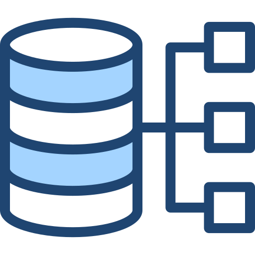

Adatbázisrendszerek
Oktató: Dr. Kovács László, Szűcs Miklós
Kredit: 5
Tematika:
- Natív SQL API jellemzése; JDBC architektúra, az SQL API elemei, kapcsolati módok; alap parancs
kiadási módok. JDBC alapú alkalmazás fejlesztés
- JDBC SQL API haladó elemei, parancskezelő osztályok, adatlekérdezés, információ lekérdezés;
működési mód paraméterezése
- ADO .Net architektúra, Middleware osztályok, lokális adatbázis példány, aszinkron végrehajtás
- ORM rendszerek áttekintése. Hibernate rendszer architektúra, myBatis rendszer architektúrája;
Konfigurációs állományok. myBatis Java API elemei
- Python adatbázis kapcsolat, Python SQLAlchemy és Entity Framework, Spring JDBC
- Oracle APEX fejlesztői környezet, az APEX működési modellje. Űrlaptípusok használata, események
és megkötések kezelése
- Tárolt eljárások áttekintése; PL/SQL alapjai, PL/SQL blokk elemei; PL/SQL nyelv adattípusai,
tömbök és struktúrák kezelése.
- PL/SQL hibakezelés, dinamikus parancsok; csomagok kezelése, gyári csomagok használata, sztring
kezelés, dátum kezelés
- ECA modell elemei, adatbázis triggerek működése, triggerek kódolása, elemzése
- Tranzakciókezelés I, az ACID elv, tranzakció komponensei, history típusok.
- Tranzakciókezelés II, zárolási és időbélyeg módszerek, szinkronizáció problémái; izolációs
szintek
- A művelet végrehajtás struktúrája. Algebrai műveleti gráf; A QEP fizikai optimalizálása, a
műveletek hatékonyságának növelése
- Felhő alapú adatkezelés alapjai; Felhő-adatbázis szolgáltatók, AWS rendszer használata,
Amazon RDS, Oracle Cloud és használata
|

|